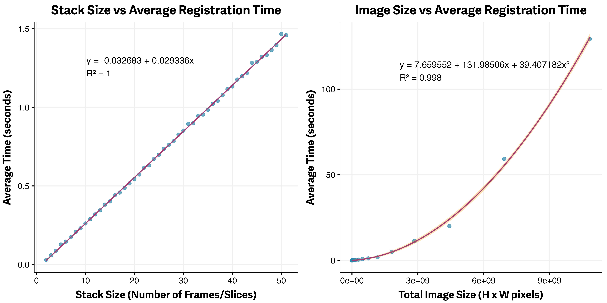
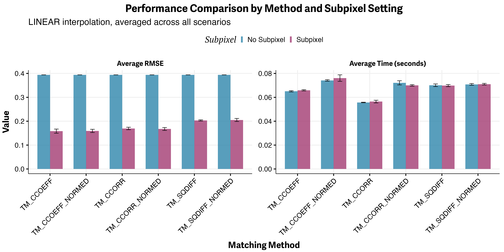

Performance Tuning for Template Matching
This guide provides a practical, data-driven overview of how to optimize TemplateMatchingPy for speed, memory, and accuracy. It explains the computational properties of template matching, interprets benchmark results, and offers actionable strategies for working with large or challenging datasets.
Understanding Performance in Template Matching
Template matching is generally efficient for moderate image sizes, but its computational cost is shaped by several key factors. The number of slices (or frames) in your stack has a direct, linear impact on processing time: doubling the number of slices will roughly double the total registration time. In contrast, the size of each image has a much more dramatic effect, as processing time increases quadratically with the number of pixels. For example, doubling both the width and height of your images will increase computation time by a factor of four. The size of the template region also matters: larger templates are more robust to noise and ambiguity, but they require more computation. Similarly, the search area parameter can be used to restrict the region in which the template is matched; limiting this area can greatly speed up alignment if you know the expected drift is small. Finally, enabling subpixel registration adds only a small computational overhead but can significantly improve the accuracy of your results.
Benchmark Insights
Empirical benchmarks confirm these theoretical expectations. Registration time increases linearly with the number of slices in the stack, so for very large datasets, it is wise to consider batch processing or parallelization to keep runtimes manageable. When it comes to image size, the relationship is quadratic: as the number of pixels increases, computation time rises rapidly. This means that downscaling images or cropping to a region of interest can yield major speedups with only a modest impact on alignment quality, especially if the cropped region contains the most informative features. The figure below illustrates these relationships, showing linear scaling with stack depth and quadratic scaling with image size.
 Figure 1: Left: Linear scaling with stack depth. Right: Quadratic scaling with image size.
Subpixel Registration: Accuracy vs. Speed
A key finding from our benchmarks is that subpixel registration, which uses Gaussian peak fitting to refine the detected displacement, provides a substantial boost in accuracy (as measured by lower RMSE) with only a small increase in processing time. Among the available template matching methods, TM_CCOEFF_NORMED and TM_SQDIFF_NORMED stand out as the most robust to noise and illumination changes. For most quantitative or high-precision applications, enabling subpixel registration is strongly recommended, as the accuracy gains far outweigh the minimal computational cost. The figure below summarizes these results, comparing processing time and registration accuracy across different methods and scenarios.
 Figure 2: Left: Processing time for different methods. Right: Registration accuracy (RMSE) with and without subpixel precision across various scenarios.
Practical Optimization Strategies
For large images, one of the most effective strategies is to crop to a central or feature-rich region before performing registration. By reducing the number of pixels processed, you can achieve much faster runtimes while still capturing the essential alignment information. The typical workflow is to select a region (for example, the central 256x256 pixels), perform registration on the cropped stack, and then apply the resulting transformation to the full-resolution images. This approach is especially effective when the central region is stable and contains distinctive features.
Another powerful technique is to downscale the entire image stack before registration. By reducing the resolution (for example, by a factor of two or four), you can dramatically decrease computation time. After registration, the calculated displacements can be scaled up and applied to the original, full-resolution stack. In practice, cropping tends to yield better results than downscaling, but the two methods can be combined for even greater efficiency.
If you know the maximum expected drift between slices, you can further accelerate registration by restricting the search area. Setting the search_area parameter in AlignmentConfig to a value slightly larger than the maximum expected shift will limit the region searched for each match, reducing computation time without sacrificing accuracy.
For users with access to compatible hardware, OpenCV can be compiled with CUDA support to leverage GPU acceleration for template matching. This can provide significant speedups, especially for very large images or stacks. However, not all OpenCV builds include CUDA support by default, so consult the OpenCV CUDA Guide for setup instructions.
Recommendations for Large Datasets
When working with very large stacks, it is often necessary to process data in batches to avoid memory issues. Parallelization, using Python's multiprocessing or joblib, can further reduce total runtime by distributing the workload across multiple CPU cores. Always monitor memory usage when working with large images or stacks, and consider saving intermediate results to disk to prevent data loss in case of interruptions.
Summary Table: Performance Tips
| Scenario | Recommended Strategy |
|---|---|
| Large images | Crop or downscale before aligning |
| Large stacks | Batch processing, parallelization |
| High precision needed | Enable subpixel registration |
| Known small drift | Restrict search area |
| GPU available | Use OpenCV with CUDA |
Further Reading
- Configuration Guide: All configuration options explained
- Template Matching Fundamentals: Theory and algorithm
For more on benchmarking and advanced optimization, see the OpenCV documentation.